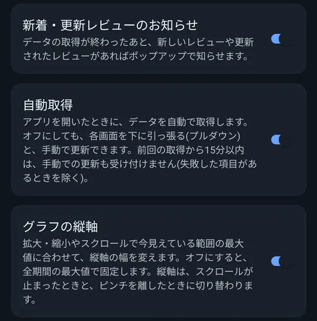
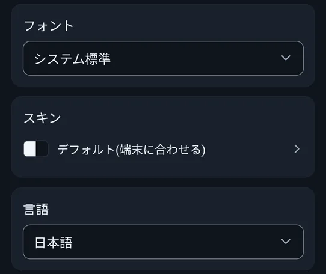
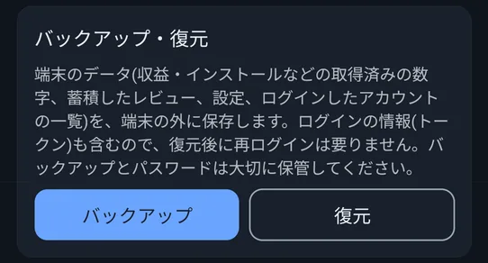
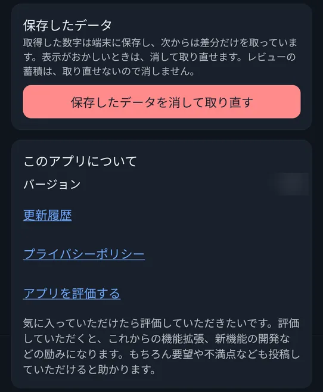

📖 はじめに（この画面でできること）
「設定」タブでは、アカウントの管理、通知・自動取得の切り替え、見た目や言語の変更、データのバックアップと復元ができます。
🛠️ 詳しい使い方
通知・自動取得・グラフの縦軸
設定の最初の3つは、オン・オフの切り替えです。
- 新着・更新レビューのお知らせ（標準はオン）: データの取得が終わったあと、新しいレビューや更新されたレビューがあれば、ポップアップで知らせます。
- 自動取得: アプリを開いたときに、データを自動で取得します。オフにしても、各画面を下に引っ張る（プルダウン）と、手動で更新できます。前回の取得から15分以内は、手動での更新も受け付けません（失敗した項目があるときを除く）。
- グラフの縦軸（標準はオン）: オンのときは、拡大・縮小やスクロールで今見えている範囲の最大値に合わせて、縦軸の幅を変えます。オフにすると、全期間の最大値で固定します。縦軸は、スクロールが止まったときと、ピンチを離したときに切り替わります。

アカウントとレポートの保存先
AdMobとPlay Consoleのアカウントを、それぞれ複数追加できます。Playのアカウントごとに、レポートの保存先も登録します。くわしくは、はじめての準備をご覧ください。
フォント・スキン・言語
アプリの見た目と言語を変えられます。
- フォント: 「システム標準」のほか、全9種類から選べます。簡体字・繁体字・韓国語では、字形が足りないフォントの選択肢は表示されません。
- スキン（配色）: 全9種類です。「デフォルト（端末に合わせる）」のほか、ライト4種（スカイ・ミント・サンド・ローズ）とダーク4種（ミッドナイト・フォレスト・プラム・モカ）があります。項目を押すと、プレビューを見ながら選ぶ画面が開き、「保存」で確定します。
- 言語: 日本語・English・简体中文・繁體中文・한국어・Español・Português・Français・Deutsch・Русский・Bahasa Indonesia・Italianoの12言語から選べます。
スキンを変えると、ホーム画面のウィジェットの色も、それに合わせて変わります。

バックアップと復元（機種変更のとき）
端末のデータ（収益・インストールなどの取得済みの数字、蓄積したレビュー、設定、ログインしたアカウントの一覧）を、端末の外に保存できます。ログインの情報（トークン）も含むので、復元後に再ログインは要りません。バックアップとパスワードは、大切に保管してください。
バックアップのしかた
- 「バックアップ」を押し、保存する場所（フォルダ）を選びます。選んだ場所に、バックアップ用のフォルダが作られます。
- バックアップを守るパスワードを、2回入力します。復元のときに必要です。忘れると、復元できません。
- 「バックアップを保存しました」と出れば完了です。
復元のしかた
- 「復元」を押し、バックアップを作成したときに作られたフォルダを選びます（ファイルではなく、フォルダを選びます）。
- バックアップを作成したときのパスワードを入力します。
- 「今のデータを消して、バックアップの内容に置き換えます」の確認で「復元する」を押します。
- 完了したら、アプリを再起動してください。

保存したデータを消して取り直す
取得した数字は、端末に保存され、次からは差分だけを取っています。表示がおかしいときは、「保存したデータを消して取り直す」で、消して取り直せます。取り直しには、少し時間がかかります。
レビューの蓄積は、取り直せないので消えません。

このアプリについて
「更新履歴」（リリースノート）と「プライバシーポリシー」を、リンクから開けます。「アプリを評価する」は、Google Playのストアのページを開きます。
アップデートのあと、最初に開いたときに、「アップデートしました」のお知らせが出ることがあります（「更新履歴を見る」から、変更内容を確認できます）。
❓ よくある質問（FAQ）
Q 機種変更のとき、データはどうなりますか？
旧端末で、設定の「バックアップ」からパスワード付きのバックアップを作り、新しい端末で「復元」してください。ログインの情報も含まれるので、再ログインは要りません。
Q バックアップのパスワードを忘れました。
パスワードを忘れると、復元できません。バックアップとパスワードは、大切に保管してください。
Q PREMIUMにすると、何ができますか？
広告が非表示になり、レビューへの返信が使えます。そのほかの機能は、無料でお使いいただけます。
Q 数字がおかしいときは、どうすればよいですか？
設定の「保存したデータを消して取り直す」を試してください。保存した数字を消して、取り直します（レビューは消えません）。